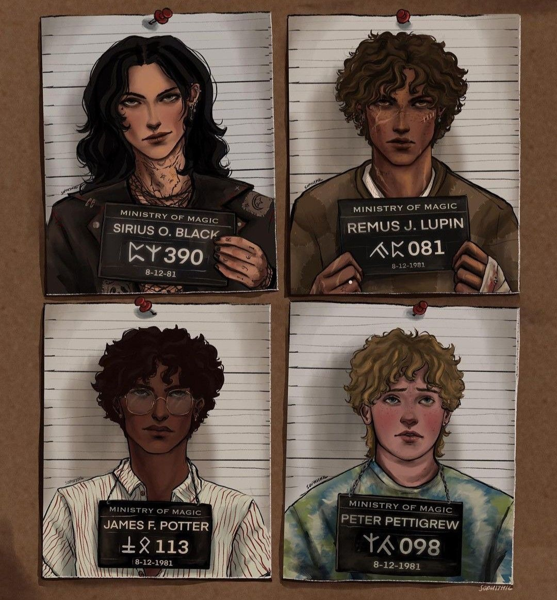
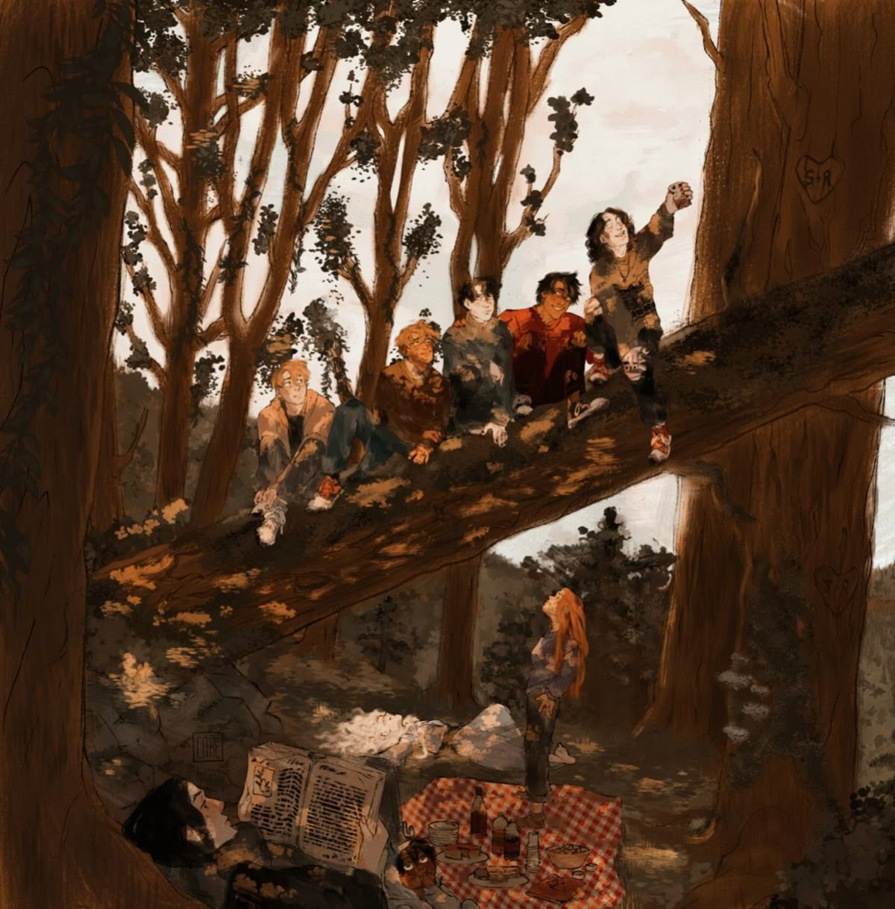

Sabores inspirados em amizade, caos e algumas das melhores memórias de Hogwarts.
The Gryffindor Tower Sugar Rush
"Uma péssima ideia do James às 23h."
Ingredientes
- 1 xícara de farinha.
- 1/2 xícara de açúcar mascavo.
- 100 g de manteiga.
- gotas de chocolate.
- pedaços de caramelo.
- marshmallows pequenos.
Modo de Preparo
- Misture manteiga e açúcar.
- Acrescente farinha até virar massa.
- Coloque chocolate e caramelo.
- Faça bolinhas grandes.
- Asse por 12 minutos a 180 °C
- Coloque marshmallows por cima ainda quente.
Full Moon Honey Cake
"Os marotos tentando fazer o Remus se sentir seguro."
Ingredientes
- 2 ovos.
- 1/2 xícara de mel.
- 1/2 xícara de açúcar.
- 1/2 xícara de leite.
- 2 colheres de manteiga.
- 1 e 1/2 xícara de farinha.
- canela.
- noz-moscada.
- fermento.
Modo de Preparo
- Bata ovos, açúcar e mel.
- Acrescente manteiga derretida e leite.
- Adicione farinha e especiarias.
- Misture fermento.
- Asse por 35 minutos a 180 °C.
- Finalize com mel por cima.
Tea at McGonagall's
"Biscoitos que claramente seriam servidos com olhar julgador."
Ingredientes
- 200 g de manteiga.
- 1/2 xícara de açúcar.
- 2 xícaras de farinha.
- baunilha.
Modo de Preparo
- Misture tudo até formar massa.
- Abra com rolo.
- Corte em retângulos.
- Fure com garfo.
- Asse por 20 minutos a 170 °C.
Mischief Managed Fudge
"Doce demais até pro Sirius admitir."
Ingredientes
- 1 lata de leite condensado.
- 200 g de chocolate meio amargo.
- 1 colher de manteiga.
- pitada de sal.
- nozes opcionais.
Modo de Preparo
- Derreta tudo em fogo baixo.
- Mexa até engrossar.
- Coloque numa forma pequena.
- Gele por 3 horas.
- Corte em quadrados.
All The Young Dudes Toffee Tart
"Tem gosto de amizade, juventude e sofrimento emocional."
Ingredientes
- massa de torta.
- 1 lata de doce de leite.
- 1 caixa de creme de leite.
- pitada de sal .
- chocolate ralado .
Modo de Preparo
- Asse a massa da torta.
- Misture doce de leite com creme de leite.
- Coloque sobre a base.
- Acrescente chocolate por cima.
- Gele por 2 horas antes de servir.

Biscoitos da Sala Comunal
"Para dividir com os amigos depois das aulas."
Ingredientes
- 100 g de manteiga.
- ½ xícara de açúcar.
- 1 ovo.
- 1½ xícara de farinha.
- Gotas de chocolate.
Modo de Preparo
- Misture manteiga e açúcar.
- Acrescente o ovo.
- Adicione a farinha e as gotas de chocolate.
- Faça bolinhas.
- Asse a 180°C por 12 a 15 minutos.
Torta de Maçã da Plataforma 9¾
"Inspirada nas despedidas e reencontros das viagens de trem."
Ingredientes
- 4 maçãs.
- 1 massa pronta para torta.
- 3 colheres (sopa) de açúcar.
- Canela a gosto.
Modo de Preparo
- Corte as maçãs em fatias.
- Misture com açúcar e canela.
- Coloque sobre a massa.
- Asse por cerca de 35 minutos a 180°C.

Torta de Amora "Verões que Duram para Sempre"
"Inspirada nos verões em Grantchester, quando tudo parecia mais simples."
Ingredientes da Massa
- 250 g de farinha.
- 125 g de manteiga gelada.
- 1 gema.
- 2 colheres de sopa de açúcar.
Ingredientes do Recheio
- 400 g de amoras.
- 100 g de açúcar.
- Suco de 1 limão.
- 1 colher de sopa de amido de milho.
Modo de Preparo
- Misture a farinha, o açúcar e a manteiga até formar uma farofa.
- Acrescente a gema e um pouco de água gelada.
- Deixe descansar na geladeira por 30 minutos.
- Cozinhe as amoras com açúcar e limão.
- Quando engrossar, adicione o amido dissolvido.
- Monte a torta.
- Asse por cerca de 40 minutos a 180°C.
Risoto de Cogumelos "Luzes da Torre de Astronomia"
"Para uma noite fria em Hogwarts, quando Remus está acordado lendo enquanto todos dormem."
Ingredientes
- 1 xícara de arroz arbóreo.
- 200 g de cogumelos frescos.
- 1 cebola pequena.
- 1 litro de caldo de legumes.
- 100 ml de vinho branco.
- 50 g de parmesão.
- 1 colher de sopa de manteiga.
Modo de Preparo
- Refogue a cebola.
- Adicione os cogumelos.
- Acrescente o arroz e o vinho.
- Vá adicionando o caldo aos poucos.
- Finalize com manteiga e parmesão.
Macarrão ao Limão Siciliano "Último Ano"
"Quando a felicidade existe, mas já vem acompanhada da saudade."
Ingredientes
- 300 g de fettuccine.
- 1 limão siciliano.
- 200 ml de creme de leite fresco.
- 50 g de parmesão.
- Pimenta-do-reino.
Modo de Preparo
- Cozinhe o macarrão.
- Misture o creme de leite, as raspas e o suco do limão.
- Junte o parmesão.
- Incorpore ao macarrão.